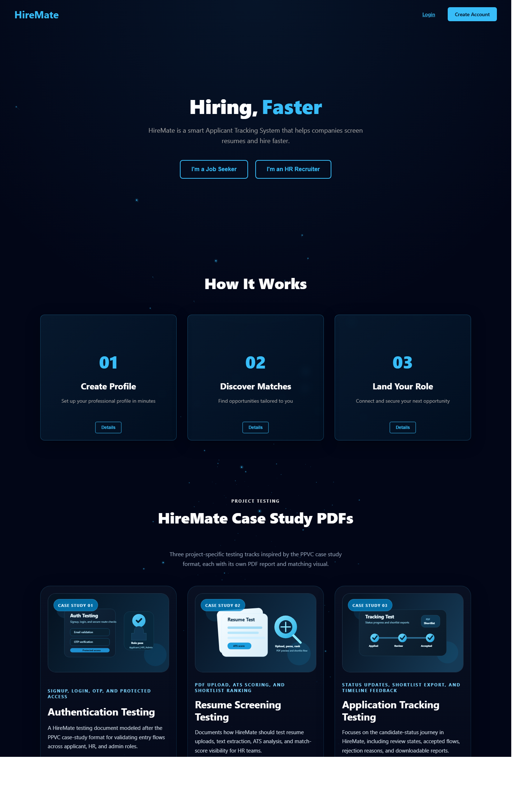
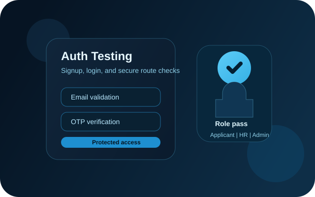
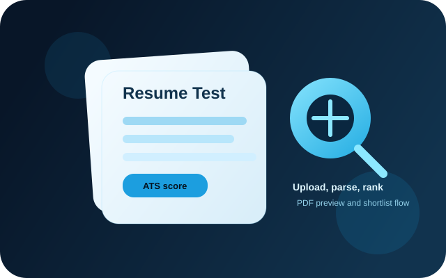
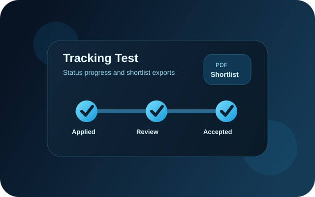

CASE STUDY: HireMate is a smart web-based Applicant Tracking System that helps companies screen resumes, track candidate progress, and export shortlist reports. The website includes a landing page, protected dashboards for applicants, HR teams, and admins, a resume upload flow with preview support, ATS-based ranking, and an application tracking timeline for job seekers.
This PDF is written in the same report-oriented style as the shared reference document, but the matter, code, and images are changed to reflect the actual HireMate website present in this project. The focus is the real UI content, the application tracking workflow, the shortlist PDF generation logic, and the website visuals already used in the HireMate interface.
Report Objective: replace the example material inside the PDF with website-specific content from HireMate.
Report Inputs Used: React components, dashboard logic, site visuals, and the generated website screenshot.
Expected Outcome: a project PDF that looks like a structured case-study report but documents this website instead of the earlier example.
Home Page Module
Applicant Module
HR Module
Tracking Module
const caseStudies = [
{
id: "authentication",
badge: "Case Study 01",
title: "Authentication Testing",
subtitle: "Signup, login, OTP, and protected access",
image: "/case-studies/images/authentication-testing.svg",
pdf: "/case-studies/hiremate-authentication-testing.pdf",
},
{
id: "resume-screening",
badge: "Case Study 02",
title: "Resume Screening Testing",
subtitle: "PDF upload, ATS scoring, and shortlist ranking",
image: "/case-studies/images/resume-screening-testing.svg",
pdf: "/case-studies/hiremate-resume-screening-testing.pdf",
},
{
id: "application-tracking",
badge: "Case Study 03",
title: "Application Tracking Testing",
subtitle: "Status updates, shortlist export, and timeline feedback",
image: "/case-studies/images/application-tracking-testing.svg",
pdf: "/case-studies/hiremate-application-tracking-testing.pdf",
},
];
The figure below is a real screenshot captured from the built HireMate website. It shows the navigation bar, the main hero message, the three workflow cards, and the case-study PDF area that links users to the project documents. This image connects the PDF directly to the actual front-end experience of the website.

The screenshot highlights how the project presents itself to both job seekers and HR recruiters. It also confirms that the application-tracking PDF belongs to a visible website section instead of being an isolated file outside the product. This was important for the updated report because the user asked for matter and images from this website itself.
The HireMate site already includes project-specific graphics for its case study area. These visuals are part of the website and help communicate the themes of authentication, resume screening, and application tracking. They are used here as website images inside the report.



These images support the same flow described in the UI copy: applicant onboarding, ATS review, and candidate status movement through the tracking and shortlist lifecycle. Including them inside the PDF keeps the content aligned with the website instead of the previous generic testing example.
The tracking screen in TrackStatus.jsx defines fixed status steps, fetches the current user's applications, converts backend records into display data, and calculates progress percentages for the timeline. This is one of the most important code sections for the application-tracking feature.
const steps = [
{ key: "APPLIED", label: "Applied" },
{ key: "UNDER_REVIEW", label: "Review" },
{ key: "SHORTLISTED", label: "Shortlisted" },
{ key: "ACCEPTED", label: "Selected" }
];
useEffect(() => {
fetch(apiUrl("/api/applications/my-applications"), {
headers: {
Authorization: `Bearer ${localStorage.getItem("token")}`
}
})
.then(res => res.json())
.then(data => {
const formatted = data.map(app => ({
jobRole: app.role,
status: app.status,
createdAt: app.createdAt,
rejectionReason: app.rejectionReason || ""
}));
setApplications(formatted);
})
.catch(err =>
console.error("Dashboard fetch error:", err)
);
}, []);
const getProgressPercent = (status) => {
if (status === "REJECTED") return 25;
const index = steps.findIndex(
(s) => s.key === status
);
if (index === -1) return 0;
return Math.round(
((index + 1) / steps.length) * 100
);
};
The HR dashboard contains built-in PDF generation logic. This makes the website itself capable of producing a styled shortlist report with summary cards, table headers, page shell elements, and candidate ranking details. The following excerpt is taken from HRDashboard.jsx.
const drawPdfNavbar = (doc, pageWidth, reportLabel) => {
doc.setFillColor(2, 6, 23);
doc.rect(0, 0, pageWidth, PDF_HEADER_HEIGHT, "F");
drawPdfLogo(doc, PDF_MARGIN, 6);
doc.setTextColor(241, 245, 249);
doc.setFont("helvetica", "bold");
doc.setFontSize(15);
doc.text("HireMate", PDF_MARGIN + 16, 14);
};
const drawPdfFooter = (doc, pageWidth, pageHeight, pageNumber) => {
doc.line(PDF_MARGIN, pageHeight - PDF_FOOTER_HEIGHT, pageWidth - PDF_MARGIN, pageHeight - PDF_FOOTER_HEIGHT);
doc.text("HireMate shortlist report", PDF_MARGIN, pageHeight - 5);
doc.text(`Page ${pageNumber}`, pageWidth - PDF_MARGIN, pageHeight - 5, {
align: "right",
});
};
const downloadShortlistedPDF = () => {
const doc = new jsPDF();
const pageWidth = doc.internal.pageSize.getWidth();
const pageHeight = doc.internal.pageSize.getHeight();
const generatedAt = formatReportTimestamp();
drawPageShell();
doc.setFont("helvetica", "bold");
doc.setFontSize(20);
doc.text("Shortlisted Candidates Report", PDF_MARGIN, PDF_CONTENT_TOP);
doc.text(`Generated on ${generatedAt}`, PDF_MARGIN, PDF_CONTENT_TOP + 7);
doc.text(`Role: ${role}`, pageWidth - PDF_MARGIN, PDF_CONTENT_TOP + 7, {
align: "right",
});
drawPdfSummaryCard(doc, PDF_MARGIN, PDF_CONTENT_TOP + 14, summaryCardWidth, "Shortlisted", String(shortlisted.length), "accent");
drawPdfSummaryCard(doc, PDF_MARGIN + summaryCardWidth + 6, PDF_CONTENT_TOP + 14, summaryCardWidth, "Average Match", `${averageShortlistMatch}%`, "default");
drawPdfSummaryCard(doc, PDF_MARGIN + (summaryCardWidth + 6) * 2, PDF_CONTENT_TOP + 14, summaryCardWidth, "Top Candidate", topCandidateLabel, "success");
};
This code is directly relevant to the current PDF task because HireMate already includes its own PDF-reporting workflow inside the HR dashboard. The document you asked to update now describes this website logic instead of the earlier generic registration-form example.
Assertions for HireMate should verify both the visible UI and the business state behind it. The following points fit the current website structure and can be used for manual testing, UI testing, or Selenium-style automation.
Expected Output from the Website: applicants can submit, track, and review statuses; HR can analyze resumes and export shortlist reports.
Expected Output from this PDF: the report now documents real HireMate matter, code, and website images while keeping a structured academic case-study style.
A. Observed Website Strengths
B. Improvements Identified During Code Review
Conclusion: the content inside this PDF has been shifted away from the older example and aligned with the actual HireMate website. The report now includes website matter, real project code excerpts, and images taken from or generated from the website itself, which is what was requested.